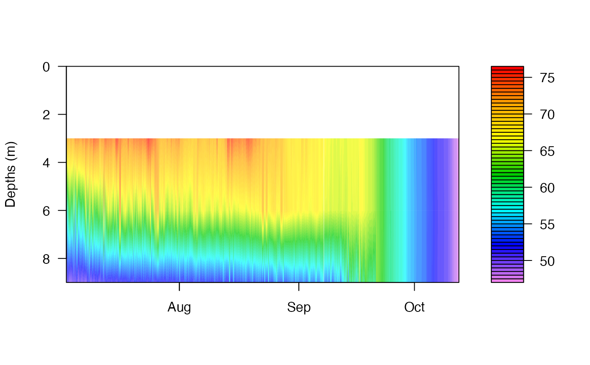
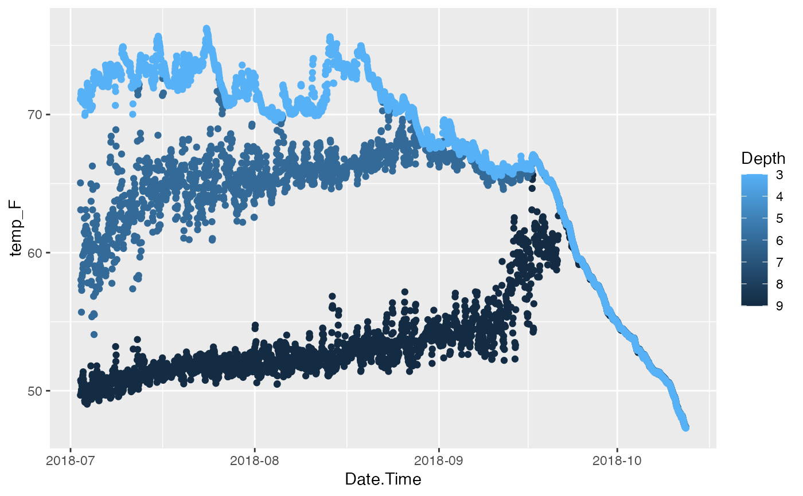

Creates a date frame (and file export) from Continuous Data in the format used by the rLakeAnalyzer package.
Export.rLakeAnalyzer(
df_CDQC,
col_depth = "Depth",
col_CDQC,
col_rLA,
dir_export = getwd(),
fn_export = NULL
)Data frame to be converted for use with rLakeAnalyzer.
Column name for "depth" in df_CDQC. Default = "Depth"
Column names in df_CDQC to transform for use with rLakeAnalyzer. Date time must be the first entry.
Column names to use with rLakeAnalyzer. See details for accepted entries. datetime must be the first entry.
Directory for export data. Default = current working directory.
File name of result to be exported. If no name provided the data frame will not be exported. Default = NULL.
Returns a data frame with daily mean values by date (in the specified range). Also, a csv file is saved to the specified directory with the prefix "IHA" and the date range before the file extension.
The rLakeAnalyzer package is not included in the ContDataQC package. An example is provided.
To run the example rLakeAnalyzer calculations you will need the rLakeAnalyzer package (from CRAN).
Install commands in the example.
The rLakeAnalyzer format is "datetime" in the format of "yyyy-mm-dd HH:MM:SS" followed by columns of data. The header of these data columns is "Param_Depth"; e.g., wtr_0.5 is water temperature (deg C) at 0.5 meters.
* doobs = Dissolved Oxygen Concentration (mg/L)
* wtr = Water Temperature (degrees C)
* wnd = Wind Speed (m/s)
* airT = Air Temperature (degrees C)
* rh = Relative Humidity (
Files will be saved, if desired, as csv.
# Convert Data for use with rLakeAnalyzer
# Data
fn_CDQC <- "TestLake_Water_20180702_20181012.csv"
df_CDQC <- read.csv(file.path(system.file(package = "ContDataQC")
, "extdata", fn_CDQC))
# Convert Date.Time from factor to POSIXct
# (make it a date and time field in R)
df_CDQC[, "Date.Time"] <- as.POSIXct(df_CDQC[, "Date.Time"])
# Columns, date listed first
col_depth <- "Depth"
col_CDQC <- c("Date.Time", "temp_F", "DO_conc")
col_rLA <- c("datetime", "wtr", "doobs")
# Output Options
dir_export <- tempdir()
fn_export <- paste0("rLA_", fn_CDQC)
# Run function
df_rLA <- Export.rLakeAnalyzer(df_CDQC, col_depth, col_CDQC, col_rLA
, dir_export, fn_export)
#~~~~~~~~~~~~~~~~~~~~~~~~~~~~~~~~~~~~~~~~~~~~~~
# use rLakeAnalyzer - heat map
library(rLakeAnalyzer)
# Filter Data for only temperature
col_wtr <- colnames(df_rLA)[grepl("wtr_", colnames(df_rLA))]
df_rLA_wtr <- df_rLA[, c("datetime", col_wtr)]
# Create bathymetry data frame
df_rLA_bth <- data.frame(depths=c(3,6,9), areas=c(300,200,100))
# Generate Heat Map
wtr.heat.map(df_rLA_wtr)

# Generate Schmidt Plot
schmidt.plot(df_rLA_wtr, df_rLA_bth)
# Generate Schmidt Stability Values
df_rLA_Schmidt <- ts.schmidt.stability(df_rLA_wtr, df_rLA_bth)
#~~~~~~~~~~~~~~~~~~~~~~~~~~~~~~~~~~~~~~~~~~~~~~
# Plot original data in ggplot
library(ggplot2)
# Plot, Create
p <- ggplot(df_CDQC, aes(x=Date.Time, y=temp_F)) +
geom_point(aes(color=Depth)) +
scale_color_continuous(trans="reverse") +
scale_x_datetime(date_labels = "%Y-%m")
# Plot, Show
p
#> Warning: Removed 3 rows containing missing values (geom_point).
